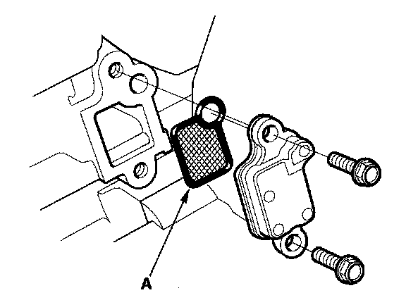

P1009
DTC P1009: VTC Advance MalfunctionNOTE:
- Before you troubleshoot, record all freeze data and any on-board snapshot, and review the general troubleshooting information.
- If DTC P0341 is stored at the same time as DTC P1009, troubleshoot DTC P1009 first, then recheck for DTC P0341.
1. Turn the ignition switch ON (II).
2. Clear the DTC with the HDS.
3. Start the engine.
4. Check for Temporary DTCs or DTCs with the HDS.
Is DTC P1009 indicated?
YES - Go to step 5.
NO - Intermittent failure, the system is OK at this time.
5. Turn the ignition switch OFF.
6. Remove the auto-tensioner.

7. Remove the VTC strainer (A), and check it for clogging.
Is the strainer OK?
YES - Go to step 8.
NO - Clean the VTC strainer, replace the engine oil filter and the engine oil, then go to step 10.
8. Test the VTC oil control solenoid valve.
Is the valve OK?
YES - Go to step 9.
NO - Replace the VTC oil control solenoid valve, then go to step 10.
9. Inspect the VTC actuator.
Is the actuator OK?
YES - Check the VTC system oil passages, then go to step 10.
NO - Replace the VTC actuator, then go to step 10.
10. Turn the ignition switch ON (II).
11. Reset the ECM with the HDS.
12. Clear the CKP pattern with the HDS.
13. Do the ECM idle learn procedure.
14. Do the CKP pattern learn procedure,
15. Check for Temporary DTCs or DTCs with the HDS.
Is DTC P1009 indicated?
YES - Check the oil passages at the VTC system, then go to step 1.
NO - Troubleshooting is complete. If any other Temporary DTCs or DTCs are indicated, go to the indicated DTC's troubleshooting.